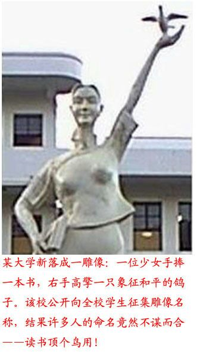
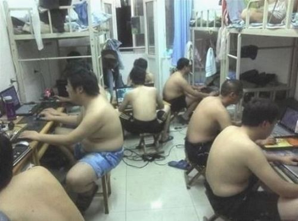
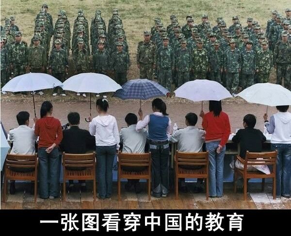

Conversation with 81184027 at Thu 10 Apr 2014 12:39:46 PM CST on 154115835 (webqq)
(12:52:13 PM) 福建-福州&水浒: 光哥你发的什么啊？
(12:52:21 PM) 福建-福州&水浒: MSG
(12:53:46 PM) 光: (11:24:22 AM) 光: 当事实改变时，你会改变想法吗？ simpson
读完这本书需要勇气，它晦涩难懂，学术性很强。完全脱离了我的舒适区，好几次想放弃……
是这些问题让我最终硬着头皮，放下，拿起，放下，再拿起......花了一个半月啃读完了它.
1）在做出战略预测时，好判断由那些要素构成？
2）为什么专家的预测错误率如此之高，甚至比黑猩猩的随机选择好不到哪里去？
3）如何在不确定的条件下，做出相对正确的决策？
4）这本书对我做出投资决策有何启示？
“狐狸和刺猬的差异”的概念。源于英国哲学家伯林-Isaiah Berlin。伯林认为世界上有两种不同的思想家。一种是刺猬，知道一种重大的事情，一种是狐狸，知道很多事情。
“剌猬的预测似乎最不准。他们是知道一种大事的专家，因此很容易把自己所知道事情的解释威力夸大，对自己不知道的事情指点江山。”
预测得比较准的是狐狸们。他们对历史的类比总是抱有怀疑，在思考问题的时候更喜欢用概率论的模式，更容易不断调整其模型……
“我们总是认为知识能够提高我们的准确性，但是，出乎我们意料的是，当知识增加的时候，其边际收益是递减的，而且，当知识太多的时候，反而会妨碍我们的预测。”……在一个快速变化、难以预测的世界里，追求全部知道的本能是致命的。
有时候，剌猬的固执的确能够让他们做出正确的判断，尤其是涉及重大变化的时候。但总体来说，他们远逊于能够快速更新的狐狸。代价也是巨大的。当剌猬们犯错误的时候，他们犯的是巨大的错误。
把这两类人比作刺猬和狐狸是非常形象的。当刺猬的观点受到挑战和质疑的时候，他们的标准反映是蜷缩成一团，竖起根根利刺，拒绝接受任何新事物和新思想，致死捍卫原先的观点。
而狐狸则竖起耳朵，倾听和观察周围环境的各种变化，然后根据实际情况决定是逃跑还是进攻。
好的判断永远是一个不断变换的概念。那种非黑即白，非此即彼的判断往往是错误的，即便正确也是暂时的正确。
我们处在一个各种极端主义日渐盛行的世界：民粹主义，民族主义，极左，极右思潮，各种原教旨主义（无论它们是宗教，政治，还是经济的）都在戕 害人们的心灵和大脑。被这些极端思想洗脑的人丧失了学习和倾听不同意见的能力，他们不能也不愿改变其想法，导致其在极端的道路上与真理被背道而驰。
也正因为此，这本书所体现的重要意义不言而喻：“对世界的观察，最好通过多元主义的棱镜，它容许现实和非现实之间许多灰色地带的存在，容许关 于真实与否的许多冲突的视 角，甚至容许以下的可能性：我们所称的真实的世界，只是可能的世界中的众多可能性之一，其中的一些实际上比我们的世界要大得多。”
约翰·梅纳德·凯恩斯 （John Maynard Keynes）曾问道：“当事实改变时，我会改变我的想法。您呢，先生？ ”,这个问题至今仍是检验一个人是否具有灵活性思维的经典设问。
我的朋友们,你的回答是刺猬式的还是狐狸式的 ：）
(11:25:00 AM) 光: http://book.douban.com/review/6426313/
(12:53:57 PM) 光: (11:26:19 AM) 光: 在一个快速变化、难以预测的世界里，追求全部知道的本能是致命的。
(11:26:37 AM) 光: 把这两类人比作刺猬和狐狸是非常形象的。当刺猬的观点受到挑战和质疑的时候，他们的标准反映是蜷缩成一团，竖起根根利刺，拒绝接受任何新事物和新思想，致死捍卫原先的观点。
而狐狸则竖起耳朵，倾听和观察周围环境的各种变化，然后根据实际情况决定是逃跑还是进攻。
(11:27:19 AM) 光: 对世界的观察，最好通过多元主义的棱镜，它容许现实和非现实之间许多灰色地带的存在，容许关 于真实与否的许多冲突的视 角，甚至容许以下的可能性：我们所称的真实的世界，只是可能的世界中的众多可能性之一，其中的一些实际上比我们的世界要大得多。
(11:28:01 AM) 光: 约翰·梅纳德·凯恩斯 （John Maynard Keynes）曾问道：“当事实改变时，我会改变我的想法。您呢，先生？ ”,这个问题至今仍是检验一个人是否具有灵活性思维的经典设问。
(11:28:35 AM) 光: 好的判断永远是一个不断变换的概念。那种非黑即白，非此即彼的判断往往是错误的，即便正确也是暂时的正确。
(12:54:04 PM) 光: 这个
(12:55:49 PM) 自力: 在不呢
(12:56:20 PM) 光: 嗯
(12:56:19 PM) 自力: 光，像想换单位了
(12:56:20 PM) 自力: 4，5个人的事情
(12:56:31 PM) 光: 嗯
(12:56:41 PM) 自力: 老板为节约成本只让1 2个人做
(12:57:00 PM) 光: 我就做过这样的工作
(12:56:58 PM) 福建-福州&水浒: 
(12:56:58 PM) 福建-福州&水浒: 
(12:56:58 PM) 福建-福州&水浒: 
(12:57:01 PM) 自力: 工资可能只有1400
(12:57:08 PM) 福建-福州&水浒: 今天讨论话题教育
(12:57:13 PM) 福建-福州&水浒: :)
(12:57:29 PM) 光: 剩者为王
(12:57:29 PM) 自力: 读书有用
(12:57:43 PM) 福建-福州&水浒:
(12:57:46 PM) 光: 虽然很辛苦
(12:57:46 PM) 自力: 那个图片是误人子弟
(12:57:52 PM) 福建-福州&水浒: 这是大学宿舍
(12:57:59 PM) 光: 但是能留到最后的应该能学到最多的东西
(12:58:14 PM) 自力: 都是这样的
(12:58:08 PM) 自力: 不是所有大学
(12:58:26 PM) 自力: 你太偏激
(12:58:42 PM) 福建-福州&水浒: 不奇怪
(12:58:53 PM) 福建-福州&水浒: 以前我谈过，所有大学周边环境普遍以消费为主
(12:58:54 PM) 自力: 天天就是写合用
(12:58:57 PM) 自力: 合同
(12:59:07 PM) 自力: 很简单的事情
(12:59:12 PM) 福建-福州&水浒: 商业气氛太严重
(12:59:13 PM) 自力: 不停地写
(12:59:29 PM) 光: 大学教育确实存在问题
(12:59:33 PM) 光: 我读书的时候
(12:59:36 PM) 自力: 我们是担保公司
(12:59:37 PM) 福建-福州&水浒: 上面的宿舍是武汉大学
(12:59:45 PM) 光: 主要开始靠自己去图书馆看书
(12:59:51 PM) 光: 课堂上没学到什么
(12:59:50 PM) 自力: 个人二手房贷款
(12:59:53 PM) 福建-福州&水浒: 不是二流，三流学府
(12:59:58 PM) 自力: 业务为主
(01:00:03 PM) 光: 正常
(01:00:04 PM) 自力: 堆积如山
(01:00:18 PM) 自力: 不是每一个宿舍都是那样
(01:00:28 PM) 福建-福州&水浒: 当然
(01:00:29 PM) 自力: 合同堆积如山
(01:00:39 PM) 福建-福州&水浒: 我是中专毕业
(01:00:48 PM) 光: 嗯
(01:00:46 PM) 自力: 天天重复这枯燥的工作
(01:01:01 PM) 福建-福州&水浒: 我读书时宿舍比图片还好
(01:01:14 PM) 光: 我发现很多人上大学之后反而不会思考了
(01:01:16 PM) 福建-福州&水浒: 没有网络，没有热水器
(01:01:30 PM) 福建-福州&水浒: 我上的中专还是国家级重点
(01:01:35 PM) 光: 嗯
(01:01:38 PM) 福建-福州&水浒: 现在能理解吗？
(01:01:38 PM) 自力: 光，你觉得
(01:01:53 PM) 自力: 再加上学校后天要答辩
(01:01:59 PM) 光: 你要找一份能激发你激情的工作
(01:02:00 PM) 自力: 我论文和设计也没做
(01:02:06 PM) 光: 不然都是浪费时间
(01:02:20 PM) 自力: 激情？
(01:02:26 PM) 光: 嗯
(01:02:30 PM) 自力: 我想没有吧
(01:02:33 PM) 光: 就是有动力去做的事情
(01:02:34 PM) 福建-福州&水浒: 毕业就是失业
(01:02:48 PM) 光: 不给钱都做的那种
(01:02:47 PM) 福建-福州&水浒: 这句话好像有有理
(01:02:48 PM) 福建-福州&水浒: :D
(01:02:52 PM) 光: 嗯
(01:03:13 PM) 自力: 任何工作都是枯燥乏味的吧
(01:03:21 PM) 光: 以金钱为目的，最后都会迷失的
(01:03:33 PM) 自力: 我自己给自己干就会有激情
(01:03:44 PM) 光: 那么干什么呢
(01:03:44 PM) 福建-福州&水浒: :强:
(01:04:21 PM) 自力: 可是谁能一下就当老板呢何况我没有社会经验没有本钱没有过硬的专业技能
(01:04:49 PM) 光: 嗯
(01:04:55 PM) 光: 从小做起了
(01:04:58 PM) 自力: 我现在做的权证员
(01:05:01 PM) 光: 摆地摊
(01:05:03 PM) 福建-福州&水浒: 那你从小有理想吧
(01:05:05 PM) 自力: 就是资料员
(01:05:13 PM) 自力: 不是跑销售
(01:05:20 PM) 自力: 是做资料
(01:05:21 PM) 福建-福州&水浒: 中国合伙人这部，对90年代有志青年最好的诠释
(01:05:33 PM) 光: 话说马云也摆过地摊的
(01:05:35 PM) 自力: 理想？
(01:05:48 PM) 自力: 现实厉害点
(01:05:58 PM) 自力: 现在年代不同了
(01:06:10 PM) 光: 想做老板就要吃得了苦
(01:06:10 PM) 自力: 拼的是知识和文化
(01:06:17 PM) 光: 一样的
(01:06:23 PM) 自力: 吃苦？谁不能吃苦？大山咯来的
(01:06:28 PM) 自力: 农村的不能吃苦吗
(01:06:30 PM) 光: 成功人都有相通之处
(01:06:36 PM) 福建-福州&水浒: 靠狡猾
(01:06:45 PM) 光: 农村里出来的很多都不错的
(01:06:45 PM) 自力: 吃苦不是重点了
(01:07:00 PM) 自力: 现在是踏实干活做事的不挣钱
(01:07:25 PM) 自力: 接活的人啥也不会干就凭嘴一张
(01:07:26 PM) 福建-福州&水浒: 一个大字不识的人也能成为富翁
(01:07:38 PM) 自力: 这是过去
(01:08:01 PM) 自力: 现在你字不认识一个你能成为大富翁？
(01:08:36 PM) 福建-福州&水浒: 积累狡猾
(01:09:51 PM) 福建-福州&水浒: 卖东西不用字人家也能生活好好的，她靠的是缺斤少量
(01:10:19 PM) 福建-福州&水浒: 还赚不少呢
(01:10:27 PM) 福建-福州&水浒: 我都遇到过几个
(01:10:31 PM) 福建-福州&水浒: :D
(01:10:42 PM) 光: 嗯
(01:10:40 PM) 自力: 呵
(01:10:50 PM) 光: 做生意的小聪明小算计
(01:10:58 PM) 光: 这个我其实也都见过，也知道
(01:11:07 PM) 自力: 曹操我喜欢
(01:11:17 PM) 自力: 可小也有大
(01:11:25 PM) 光: 嗯
(01:11:51 PM) 自力: 刘备搁现在
(01:11:56 PM) 自力: 死几百遍了
(01:12:04 PM) 光: 不会
(01:12:05 PM) 自力: 不死也没人看得起他
(01:12:10 PM) 光: 无用之用
(01:12:17 PM) 自力: 没人会可怜他
(01:12:23 PM) 光: 这或许也是一种领导智慧
(01:12:21 PM) 反邪★石家庄: 没有喜欢貂蝉的吗
(01:12:44 PM) 自力: 呵可是他搁现在
(01:12:53 PM) 自力: 他上不去那个位置啊
(01:12:55 PM) 光: 一样
(01:13:11 PM) 光: 中国这样的人能做大的
(01:13:43 PM) 自力: 不得行
(01:13:53 PM) 自力: 他没实力
(01:14:00 PM) 光: 对啊
(01:13:58 PM) 福建-福州&水浒: 没有很聪明的人，只有谦卑的人，才是智者
(01:14:16 PM) 光: 就是没实力，才能得人心
(01:14:34 PM) 光: 嗯
(01:14:46 PM) 自力: 他那种示弱哲学
(01:15:08 PM) 光: 刘备本来是靠示弱哲学起家的
(01:15:14 PM) 光: 后来逞强了一次
(01:15:16 PM) 光: 结果死了
(01:15:21 PM) 福建-福州&水浒: :D
(01:15:30 PM) 光: :face14:
(01:15:46 PM) 福建-福州&水浒: 伪装也是保护自己
(01:15:51 PM) 光: 嗯
(01:16:19 PM) 自力: 现在行不通的
(01:16:20 PM) 福建-福州&水浒: 我说一个事情吧
(01:16:26 PM) 福建-福州&水浒: 大家听听
(01:16:33 PM) 自力: 人家直接看不起懒得搭理你
(01:16:38 PM) 光: 嗯
(01:17:07 PM) 自力: 因为我是属于那种示弱类的表面装傻实际心里明白
(01:17:13 PM) 自力: 可这样真的不行
(01:17:25 PM) 自力: 现在讲究强势和表现
(01:17:28 PM) 光: 嗯
(01:17:46 PM) 自力: 过去讲究内敛
(01:17:51 PM) 福建-福州&水浒: 我那里一个前任市委书记前几年大兴公园，一个县级市200多个公园，老百姓都说这个书记好啊，几乎每个村公园都是政府建设的
(01:18:02 PM) 光: 嗯
(01:18:08 PM) 自力: 你说刘备搁现在能当上领导？
(01:18:15 PM) 福建-福州&水浒: 后来查腐败，他第一个
(01:18:23 PM) 光: 嗯
(01:18:22 PM) 福建-福州&水浒: 他很会伪装啊
(01:18:37 PM) 福建-福州&水浒: 多聪明的人啊
(01:18:43 PM) 福建-福州&水浒: 得了民心
(01:18:48 PM) 光: 做工程捞钱这个很正常
(01:19:01 PM) 光: 嗯
(01:19:11 PM) 福建-福州&水浒: 不明白的老百姓还替他叫屈呢
(01:19:19 PM) 光: 嗯
(01:19:25 PM) 光: 信息不对称
(01:19:34 PM) 光: 老百姓知道的信息有限
(01:19:49 PM) 光: 而且还有各种解读版本
(01:19:51 PM) 福建-福州&水浒: 一个县级市大大小小200个公园？
(01:19:55 PM) 光: 难辨真伪
(01:20:12 PM) 福建-福州&水浒: 再看看有些乡镇的道路？
(01:20:15 PM) 福建-福州&水浒: 比较下
(01:20:26 PM) 光: 说群众的眼睛是雪亮的，这个本身就是一个假话，恭维不实之言
(01:20:26 PM) 反邪★石家庄: 比那些只贪不做事的好啊
(01:20:48 PM) 福建-福州&水浒: 一个马路大坑3年后坑只大不小
(01:20:52 PM) 光: 嗯
(01:21:21 PM) 福建-福州&水浒: 那说明建公园工程太得民心了
(01:21:38 PM) 光: 嗯
(01:22:25 PM) 反邪★石家庄: 老百姓不是不让官员贪，做点好事实事贪我们可以理解啊
(01:22:37 PM) 光: 嗯
(01:22:44 PM) 福建-福州&水浒: :D
(01:22:55 PM) 光: 不是老百姓理解不理解的问题
(01:22:59 PM) 福建-福州&水浒: 表面贪的还挺合理
(01:23:10 PM) 光: 老百姓没权利
(01:23:09 PM) 目光之处: 孔子提出的这套理论太超前了，他早就知道人类的理想境界是世界大同，是天下为公，是他所主张的“大道”，但他又知道这只是理想，所以在他的“今世”（春秋时代），他认为是大道已经不存在了，为了让老百姓相对能过得好一点，来个小康也算不错了，就总结出六君子的治理之道，这就是仁、义、礼、智、信，也就是正名和排序。这一套果然受用，延用了几千年，所有既得利益者，都不想再改变这种状态。并且一再将其理想化，推出一代又一代明君，以此来保证社会的安定。如果出了暴君，出贪官，那也没有办法，等着改朝换代。
(01:23:12 PM) 反邪★石家庄: 不要太黑了
(01:23:20 PM) 光: 你想不理解也不行
(01:23:31 PM) 福建-福州&水浒: 实质给党政机关丢脸
(01:23:52 PM) 反邪★石家庄: 什么时候老百姓造反了就有这帮狗官受的了
(01:24:27 PM) 福建-福州&水浒: :)
(01:24:36 PM) 光: (01:23:09 PM) 目光之处: 孔子提出的这套理论太超前了，他早就知道人类的理想境界是世界大同，是天下为公，是他所主张的“大道”，但他又知道这只是理想，所以在他的“今世”（春秋时代），他认为是大道已经不存在了，为了让老百姓相对能过得好一点，来个小康也算不错了，就总结出六君子的治理之道，这就是仁、义、礼、智、信，也就是正名和排序。这一套果然受用，延用了几千年，所有既得利益者，都不想再改变这种状态。并且一再将其理想化，推出一代又一代明君，以此来保证社会的安定。如果出了暴君，出贪官，那也没有办法，等着改朝换代。 //一个新的暴力集团代替一个旧的暴力集团
(01:25:16 PM) 光: 要知道这些官本身也都是从民里面上去的
(01:25:36 PM) 光: 好比斗地主
(01:25:44 PM) 福建-福州&水浒: 还是古人厉害，官字两个口
(01:26:00 PM) 光: 嗯
(01:26:11 PM) 目光之处: 大道既隐，小康也就不错了
(01:26:20 PM) 光: 嗯
(01:28:58 PM) 福建-福州&水浒: 国际红十字会，
(01:29:11 PM) 福建-福州&水浒: 成员里没有中国
(01:29:23 PM) 光: 嗯
(01:29:32 PM) 福建-福州&水浒: 人家不信任
(01:29:45 PM) 光: 中国还是放弃中国特色比较好
(01:29:55 PM) 光: 加入国际社会里面
(01:30:12 PM) 光: 按照国际惯例来做事
(01:30:51 PM) 自力: 现在不一样了
(01:30:58 PM) 光: 不然这些陈腐的旧疾是无法根除的
(01:31:02 PM) 福建-福州&水浒: 觉得好可悲
(01:31:43 PM) 光: 我觉得台湾和香港都做的很好
(01:31:46 PM) 光: 大陆为什么不可以呢
(01:33:09 PM) 福建-福州&水浒: 与其说社会在发展，不如说用错误掩盖错误
(01:33:19 PM) 光: 嗯
(01:33:32 PM) 福建-福州&水浒: 反正都错了，那就错到底
(01:34:27 PM) 自力: 刚才手机停机了都不知道你们说什么了
(01:34:37 PM) 自力: 刚才说到刘备伪装
(01:34:44 PM) 光: (01:18:15 PM) 福建-福州&水浒: 后来查腐败，他第一个
(01:18:23 PM) 光: 嗯
(01:18:22 PM) 福建-福州&水浒: 他很会伪装啊
(01:18:37 PM) 福建-福州&水浒: 多聪明的人啊
(01:18:43 PM) 福建-福州&水浒: 得了民心
(01:18:48 PM) 光: 做工程捞钱这个很正常
(01:19:01 PM) 光: 嗯
(01:19:11 PM) 福建-福州&水浒: 不明白的老百姓还替他叫屈呢
(01:19:19 PM) 光: 嗯
(01:19:25 PM) 光: 信息不对称
(01:19:34 PM) 光: 老百姓知道的信息有限
(01:19:49 PM) 光: 而且还有各种解读版本
(01:19:51 PM) 福建-福州&水浒: 一个县级市大大小小200个公园？
(01:19:55 PM) 光: 难辨真伪
(01:20:12 PM) 福建-福州&水浒: 再看看有些乡镇的道路？
(01:20:15 PM) 福建-福州&水浒: 比较下
(01:20:26 PM) 光: 说群众的眼睛是雪亮的，这个本身就是一个假话，恭维不实之言
(01:20:26 PM) 反邪★石家庄: 比那些只贪不做事的好啊
(01:20:48 PM) 福建-福州&水浒: 一个马路大坑3年后坑只大不小
(01:20:52 PM) 光: 嗯
(01:21:21 PM) 福建-福州&水浒: 那说明建公园工程太得民心了
(01:21:38 PM) 光: 嗯
(01:22:25 PM) 反邪★石家庄: 老百姓不是不让官员贪，做点好事实事贪我们可以理解啊
(01:22:37 PM) 光: 嗯
(01:22:44 PM) 福建-福州&水浒: :D
(01:22:55 PM) 光: 不是老百姓理解不理解的问题
(01:22:59 PM) 福建-福州&水浒: 表面贪的还挺合理
(01:23:10 PM) 光: 老百姓没权利
(01:23:09 PM) 目光之处: 孔子提出的这套理论太超前了，他早就知道人类的理想境界是世界大同，是天下为公，是他所主张的“大道”，但他又知道这只是理想，所以在他的“今世”（春秋时代），他认为是大道已经不存在了，为了让老百姓相对能过得好一点，来个小康也算不错了，就总结出六君子的治理之道，这就是仁、义、礼、智、信，也就是正名和排序。这一套果然受用，延用了几千年，所有既得利益者，都不想再改变这种状态。并且一再将其理想化，推出一代又一代明君，以此来保证社会的安定。如果出了暴君，出贪官，那也没有办法，等着改朝换代。
(01:23:12 PM) 反邪★石家庄: 不要太黑了
(01:23:20 PM) 光: 你想不理解也不行
(01:23:31 PM) 福建-福州&水浒: 实质给党政机关丢脸
(01:23:52 PM) 反邪★石家庄: 什么时候老百姓造反了就有这帮狗官受的了
(01:24:27 PM) 福建-福州&水浒: :)
(01:24:36 PM) 光: (01:23:09 PM) 目光之处: 孔子提出的这套理论太超前了，他早就知道人类的理想境界是世界大同，是天下为公，是他所主张的“大道”，但他又知道这只是理想，所以在他的“今世”（春秋时代），他认为是大道已经不存在了，为了让老百姓相对能过得好一点，来个小康也算不错了，就总结出六君子的治理之道，这就是仁、义、礼、智、信，也就是正名和排序。这一套果然受用，延用了几千年，所有既得利益者，都不想再改变这种状态。并且一再将其理想化，推出一代又一代明君，以此来保证社会的安定。如果出了暴君，出贪官，那也没有办法，等着改朝换代。 //一个新的暴力集团代替一个旧的暴力集团
(01:25:16 PM) 光: 要知道这些官本身也都是从民里面上去的
(01:25:36 PM) 光: 好比斗地主
(01:25:44 PM) 福建-福州&水浒: 还是古人厉害，官字两个口
(01:26:00 PM) 光: 嗯
(01:26:11 PM) 目光之处: 大道既隐，小康也就不错了
(01:26:20 PM) 光: 嗯
(01:28:58 PM) 福建-福州&水浒: 国际红十字会，
(01:29:11 PM) 福建-福州&水浒: 成员里没有中国
(01:29:23 PM) 光: 嗯
(01:29:32 PM) 福建-福州&水浒: 人家不信任
(01:29:45 PM) 光: 中国还是放弃中国特色比较好
(01:29:55 PM) 光: 加入国际社会里面
(01:30:12 PM) 光: 按照国际惯例来做事
(01:30:51 PM) 自力: 现在不一样了
(01:30:58 PM) 光: 不然这些陈腐的旧疾是无法根除的
(01:31:02 PM) 福建-福州&水浒: 觉得好可悲
(01:31:43 PM) 光: 我觉得台湾和香港都做的很好
(01:31:46 PM) 光: 大陆为什么不可以呢
(01:33:09 PM) 福建-福州&水浒: 与其说社会在发展，不如说用错误掩盖错误
(01:33:19 PM) 光: 嗯
(01:33:32 PM) 福建-福州&水浒: 反正都错了，那就错到底
(01:35:08 PM) 自力: 阁现在别人不认为是内敛觉得是在装B
(01:35:23 PM) 光: 嗯
(01:35:27 PM) 光: 自己要有主见
(01:35:46 PM) 光: 知道什么是对的，什么是错的
(01:35:50 PM) 光: 坚持对的事情
(01:36:00 PM) 光: 如果错了，也要让自己可以改错
(01:36:32 PM) 光: 褒贬这个你左右不了的
(01:36:37 PM) 光: 随他们去吧
(01:40:42 PM) 福建-福州&水浒: 山西杀人犯胡文海
(01:40:29 PM) 福建-福州&水浒: :)
(01:41:07 PM) 福建-福州&水浒: 我觉得他好牛啊
(01:41:21 PM) 福建-福州&水浒: 不是说他杀人牛，
(01:42:16 PM) 福建-福州&水浒: 他在法院上说的最后一段话，太牛了
(01:45:01 PM) 自力: 说啥
(01:48:47 PM) 福建-福州&水浒: 我知道杀人犯法，我一年收入也有4.5万，换做别人可能不会去做这些事，当你看到一个小小的公务员，几年之间开30多万的小车耀武扬威，我举报无门，官老爷把责任一个推一个，官逼民反！
(01:50:06 PM) 自力: 额
(01:50:22 PM) 自力: 愣头青
(01:52:34 PM) 福建-福州&水浒: 他说我知道我将死去，如果我的死能引起官老爷们的注意，去查那些贪官污泥，我死而无憾！！
(01:54:45 PM) The account has disconnected and you are no longer in this chat. You will automatically rejoin the chat when the account reconnects.